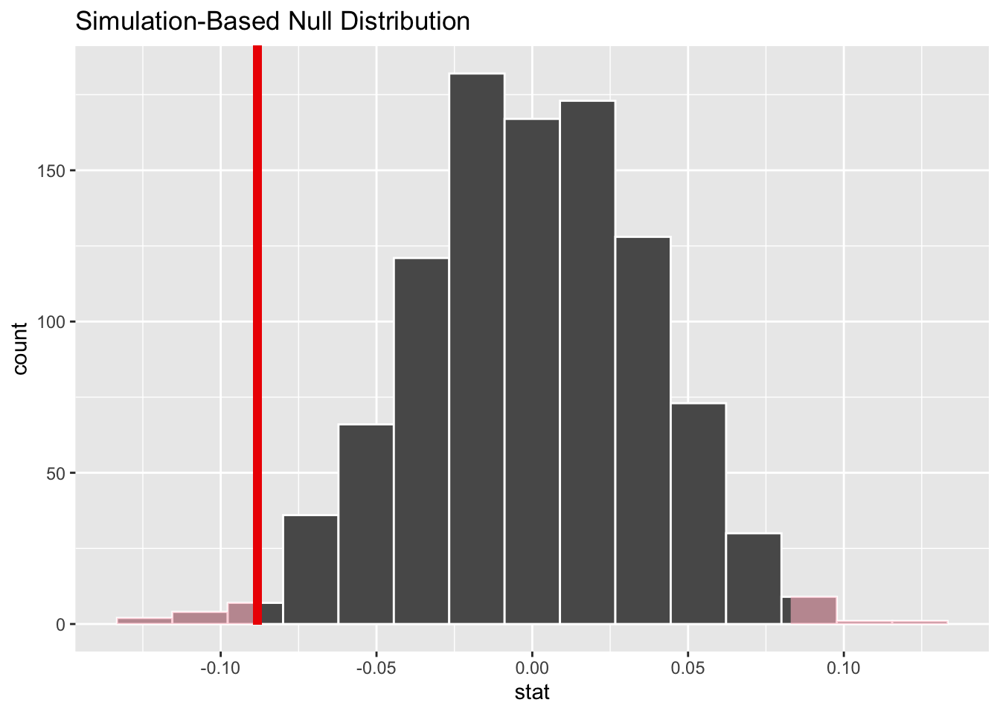

Due to the high rate of divorce in the United States, a topic of interest for many investigators is relationship happiness in marriages. This project aimed to construct a model predicting relationship happiness using numerous relationship variables. Permutation tests were used to select variables that were significantly correlated to relationship happiness – results indicated that only three out of five potential relationship variables were significantly related to relationship happiness. Seven linear models were constructed using the three variables and the best model based on the training-validation split and selecting the maximized r-squared value was selected to predict relationship happiness – specifically, an interaction between hours of sleep per night and argument frequency best predicted relationship happiness. Hours of sleep appeared to serve as a protective factor for couples with higher argument frequency, effectively reducing the negative effect of argument frequency on relationship happiness.
1 Background and Significance
In 2019, there were 2,015,603 marriages in the United States [1]. This means that marriage is a crucial part of life for a lot of American people. According to marriage.com, marriage “acts as a social and legal contract that gives a partner someone to rely on, brings a greater degree of intimacy and emotional security” [2]. At least that this is the ideal goal of marriage. However, also according to the CDC, in 2019 there were 746,971 divorces in the United States, so this idealistic goal of marriage is not reached in every relationship.
Given this grim outlook on marriage, we were interested as to what components of a marriage make it a successful one. Previous studies have shown that cohabitation before marriage is bad for marriage, with studies finding on average that couples that cohabited before marriage had a 33% higher rate of divorce than couples that did not cohabit before marriage [3]. In addition, marriages where at least one member is depressed are less positive than marriages where neither member is depressed [4]. Additionally, when looking at sleep and marriage, The American Academy of Sleep Medicine states that “being stably married or gaining a partner is associated with better sleep in women than being unmarried or losing a partner” [5]. With so many factors that can affect a relationship, how can we predict happiness in a marriage?
Our main analysis looks at how eleven different variables influence relationship happiness. We hypothesize that years married, cohabiting before marriage, hours of sleep a night, days binge drinking, and argument frequency all impact the happiness of a marriage. Our goal is to see if it is possible to predict happiness in a marriage through a combination of these variables.
2 Methods
a. Data collection. The data, which was collected between 2014 and 2015 only includes couples that “were legally married and had been living together for a minimum of three years at the time of the study.” The sample was collected using different methods. About 70% of the same-sex couples in the sample were selected from the Massachusetts Registry of Vital Records and participants received invitations to participate in the mail. About 40% of the different-sex couples in the sample were selected from public records and then asked to participate. The rest of the participants were recruited through referrals. After all that, the couples were then asked to refer any other couples that met the study’s requirements. The data itself was collected through a series of 10-day surveys with questions about their relationship which were referred to as diaries. The couples were asked to complete these questionnaires separately. “90% of participants completed all 10 days”. All of this information was provided by icpsr.umich.edu under Health and Relationships Project, United States, 2014-2015 (ICPSR 37404).
b. Variable creation.There are twelve variables we looked at in our analysis. RELHAPPY, which is our primary variable of interest, is a discrete numerical variable with range 1 to 7 assessing the respondent’s degree of happiness in the relationship, with higher scores indicating greater relationship happiness. COHB4MAR is a normal categorical variable indicating whether or not a couple cohabitated before marriage. MNCOHB4M is a continuous numerical variable assessing the number of months that the couple spent cohabiting before marriage if they did cohabit before marriage, with range 1 to 180. YRSMAR is a continuous numerical variable assessing how many years a couple has been married for, with range 0 to 13 years. RAGE is a continuous numerical variable with range 35 to 65 indicating the respondent’s age at the time of the survey. STRSCALE is a discrete numerical variable with range 9 to 41 indicating how stressful the marriage is; it is an aggregate measure of multiple variables that were calculated by adding up the scores (from 1 to 7) of the other items. RELREWAR is a discrete numerical variable with range 1 to 6 representing how rewarding the relationship is, with higher scores indicating greater feelings that the relationship with their spouse is rewarding. SPCRITIC is a discrete numerical variable with range 1 to 5 representing how critical their spouse is, with higher scores indicating a more critical spouse. ARGUEFRQ is a discrete numerical variable with range 1 to 5 assessing how often the respondent argues with their spouse, with higher scores indicating a higher frequency of arguing. DEPSYM is a discrete numerical variable with range 11 to 38 assessing depressive symptoms in the respondent; this is an aggregate measure calculated by adding up the positive variable items in a reverse-coded fashion. CDDAYSBD is a discrete numerical variable with range 0 to 90 indicating how many days out of the last three months that the respondent’s spouse had four or more drinks. Finally, HRSLEEP is a continuous numerical variable with range 2 to 10, indicating how many hours of sleep the respondent gets on an average night. All variables were taken from Health and Relationships Project, United States, 2014-2015 and, unless otherwise stated, were direct measures.
RELHAPPY1 was created by us in order to better use the data provided. Originally the data was in string format and we converted it into numeric. We extracted the numbers provided in the original strings to create RELHAPPY1.
ARGUEFRQ1 was created by us in order to better use the data provided. Originally the data was in string format and we converted it into numeric. We extracted the numbers provided in the original strings to create ARGUFRQ1.
c. Analytic Methods. A bar graph was used to illustrate the distribution of respondents who cohabited and did not cohabit before marriage. A histogram was used to illustrate the distribution of daily hours of sleep received by respondents at night. Five initial permutation tests were conducted to assess the relationship between the outcome variable, relationship happiness, and the potential predictor variables, years married, nightly hours of sleep, number of days in a three-month period where the partner had more than three drinks, and argument frequency. Two new variables were constructed for relationship happiness and argument frequency by extracting the numerical value from the string data. The relationship between relationship happiness and cohabitation before marriage was assessed using side-by-side boxplots.
Once we had initial results for our five variables of interest in relation to relationship happiness, we chose three variables to do linear regression models with. We chose these variables based on if they were significantly correlated to relationship happiness or not. Through our hypothesis testing, we found that two variables, years married and argument frequency had a significant non-zero correlation coefficient with relationship happiness. We also chose a third variable, hours of sleep per night to use in our modeling because it had the lowest p-value of the variables with a non-significant relationship with relationship happiness. Then we chose 7 different possible combinations of these variables to test to see if a linear regression would be a good model for our data which were, argument frequency, argument frequency added to years married, argument frequency added to years married, and hours of sleep per night, argument frequency multiplied by hours of sleep per night, square root of years married, a degree two polynomial of argument frequency, and a degree three polynomial of argument frequency. We split our data into 3 subsections: testing data, training data, and validation data. Then we used our training data subgroup to create linear regressions based on our 7 models. Finally, we selected our best model based on the maximized r-squared value for the validation data. We ended up selecting our fourth model which was the model that contained interaction between hours of sleep and argument frequency. Then we used our testing data to test this model.
3 Results
In the results sections we used libraries from the following sources: [6], [7], [8], and [9].
3.1.1 Descriptive statistics for relationship happiness, our response variable.
Relationship happiness - Descriptive statistics First, we dropped 7 NAs in the data for a total of 831 observations. From the resulting subset, the mean relationship happiness was 5.19, with range 1 to 7.
Years Married - Descriptive statistics No NAs were dropped. The mean number of years married was 8.69, with range from 0 to 42.5.
Code
```{r}data %>%drop_na() %>%select(YRSMAR) %>%summarise(mean =mean(YRSMAR), min =min(YRSMAR), max =max(YRSMAR))```
3.1.3 Descriptive statistics for cohabitation before marriage.
Cohabitation before marriage - Descriptive statistics No NAs were dropped. The majority of respondents cohabited before marriage, as depicted in the bar graph below.
Code
```{r}data %>%select(COHB4MAR) %>%mutate(COHB4MAR1 =str_sub(COHB4MAR, 2, 2)) %>%mutate(COHB4MAR1 =as.numeric(COHB4MAR1)) %>%ggplot(aes(COHB4MAR1)) +geom_bar() +ggtitle('Bar graph of cohabitation before marriage') +xlab('Cohabitation before marriage')```
Code
```{r}data %>%select(HRSLEEP) %>%summarize(mean =mean(HRSLEEP), minimum =min(HRSLEEP), maximum =max(HRSLEEP))```
3.1.4 Descriptive Statistics for hours of sleep.
Code
```{r}data %>%select(HRSLEEP) %>%ggplot(aes(x = HRSLEEP)) +geom_histogram(col ='white') +ggtitle('Distribution of Hours of Sleep per Night') +xlab('Hours of Sleep per Night')```
3.1.5 Descriptive Statistics for argument frequency.
Code
```{r}data <- data %>%mutate(ARGUEFRQ1 =str_sub(ARGUEFRQ, 2, 2)) %>%mutate(ARGUEFRQ1 =as.numeric(ARGUEFRQ1))data %>%summarise(mean =mean(ARGUEFRQ1), minimum =min(ARGUEFRQ1), maximum =max(ARGUEFRQ1))```
3.1.6 Descriptive Statistics for days in the past three months that spouse consumed more than 4 drinks
For the hypothesis tests, we will assess using a significance level of 0.05. Given that we are doing multiple tests and models, we will divide the significance level by the number of tests and coefficients in our models to avoid p-hacking. So, for each individual test, the significance level is 0.0025.
3.2.1 Permutation test for relation between years married and relationship happiness.
\(H_o\): Relationship happiness is not related to years married; the correlation coefficient is 0.
\(H_a:\) Relationship happiness is negatively related to years married: the correlation coefficient is negative.
Years married vs. relationship happiness from a sub-sample of 831 respondents (after NAs were dropped), the data revealed a significant negative correlation, based on our p-value, between years married and relationship happiness, such that as years married increases, relationship happiness decreases.
Response: RELHAPPY1 (numeric)
Explanatory: YRSMAR (numeric)
# A tibble: 1 × 1
stat
<dbl>
1 -0.0883
# A tibble: 1 × 1
p_value
<dbl>
1 0.02

3.2.2 Preliminary result of relationship between months cohabiting before marriage and relationship happiness.
These boxplots provide preliminary results that the tail ends of happiness (i.e., perfect relationship happiness and extreme unhappiness) correspond to longer cohabitation periods before marriage, as indicated by the IQR of the boxplots.
Code
```{r}da37404.0001%>%select(MNCOHB4M, RELHAPPY) %>%drop_na() %>%ggplot(aes(x = MNCOHB4M, y = RELHAPPY)) +geom_boxplot() +ggtitle('Happiness with Relationship and Pre-Marriage Cohabitation') +xlab('Months Cohabitated before Marriage') +ylab("Happiness with relationship")```
3.2.3 Permutation test for relation between cohabitation before marriage and relationship happiness.
\(H_o\): Relationship happiness is not related to cohabitation before marriage; the correlation coefficient is 0.
\(H_a:\) Relationship happiness is negatively related to cohabitation before marriage; the correlation coefficient is negative.
Cohabitation before marriage vs. relationship happiness from a sub-sample of 831 respondents (after NAs were dropped). The boxplot for respondents that cohabited before marriage has a smaller inter-quartile range than the boxplot for respondents who did not cohabit before marriage, indicating that couples that cohabited before marriage are generally happier with their relationship. This finding is contrary to previous findings that suggest cohabiting before marriage is bad for the relationship. However, follow-up hypothesis testing using a permutation test for difference in means revealed that there was a non-significant difference in relationship happiness between couples that cohabited and those that did not cohabit before marriage.
```{r}obs_stat <- data %>%specify(RELHAPPY1 ~ COHB4MAR) %>%calculate(stat ='diff in means')obs_statset.seed(2023)null_dist <- data %>%specify(RELHAPPY1 ~ COHB4MAR) %>%hypothesize(null ='independence') %>%generate(reps =1000, type ='permute') %>%calculate(stat ='diff in means')null_dist %>%visualize() +shade_p_value(obs_stat = correlation_hat,direction ="two-sided")null_dist %>%get_p_value(obs_stat = correlation_hat,direction ='two-sided')```
3.2.4 Permutation Test for hours of sleep per night and relationship happiness.
Hypothesis Testing for independence between hours of sleep per night and relationship happiness
Null Hypothesis: hours of sleep per night and relationship happiness are independent. The correlation coefficient is 0.
Alternative Hypothesis: hours of sleep per night and relationship happiness are not independent. The correlation coefficient is not 0.
Code
```{r}#| message: false#| warning: falseobs_stat <- data %>%specify(RELHAPPY1 ~ HRSLEEP) %>%calculate(stat ='correlation')set.seed(2022)null_dist <- data %>%specify(RELHAPPY1 ~ HRSLEEP) %>%hypothesize(null ='independence') %>%generate(reps =1000, type ='permute') %>%calculate(stat ='correlation')null_dist %>%visualize()p_value <- null_dist %>%get_p_value(obs_stat = obs_stat, direction ='both')p_valuenull_dist %>%ggplot(aes(stat)) +geom_density(fill ='blue', alpha =0.5) +geom_vline(xintercept = obs_stat$stat, color ="red", size=1.5) +geom_vline(xintercept =- obs_stat$stat, color ="red", size=1.5)obs_stat```
This permutation test results in a p-value of 0.004, which is slightly larger than our significance level of 0.0025. Therefore we fail to reject the null-hypothesis that the correlation coefficient between relationship happiness and hours of sleep per night is 0.
3.2.5 Permutation test for independence between days partner consumed more than 4 drinks in the last 90 days and relationship happiness:
Null Hypothesis: Days partner consumed more than 4 drinks in the last 40 days and relationship happiness are independent. The correlation coefficient is 0.
Alternative Hypothesis: Days partner consumed more than 4 drinks in the last 40 days are not independent. The correlation coefficient is not 0.
Code
```{r}obs_stat <- data %>%specify(RELHAPPY1 ~ CDDAYSBD) %>%calculate(stat ='correlation')set.seed(2022)null_dist <- data %>%specify(RELHAPPY1 ~ CDDAYSBD) %>%hypothesize(null ='independence') %>%generate(reps =1000, type ='permute') %>%calculate(stat ='correlation')null_dist %>%visualize()p_value <- null_dist %>%get_p_value(obs_stat = obs_stat, direction ='both')p_valuenull_dist %>%visualize() +theme_dark() +shade_p_value(obs_stat = obs_stat, direction ='both')null_dist %>%ggplot(aes(stat)) +geom_density(fill ='blue', alpha =0.5) +geom_vline(xintercept = obs_stat$stat, color ="red", size=1.5) +geom_vline(xintercept =- obs_stat$stat, color ="red", size=1.5)obs_stat```
This permutation test results in a p-value of 0.566 which is greater than our significance level of 0.0025, so we fail to reject the null hypothesis that days partner consumed more than 4 drinks in the last 40 days is independent from relationship happiness.
3.2.6 Permutation test for independence between argument frequency and relationship happiness:
Null Hypothesis: Argument frequency and relationship happiness are independent. The correlation coefficient is 0.
Alternative Hypothesis: argument frequency and relationship happiness are not independent. The correlation coefficient is not 0.
Code
```{r}#| warning: falseobs_stat <- data %>%specify(RELHAPPY1 ~ ARGUEFRQ1) %>%calculate(stat ='correlation')set.seed(2022)null_dist <- data %>%specify(RELHAPPY1 ~ ARGUEFRQ1) %>%hypothesize(null ='independence') %>%generate(reps =1000, type ='permute') %>%calculate(stat ='correlation')null_dist %>%visualize()p_value <- null_dist %>%get_p_value(obs_stat = obs_stat, direction ='both')p_valuenull_dist %>%visualize() +theme_dark() +shade_p_value(obs_stat = obs_stat, direction ='both')null_dist %>%ggplot(aes(stat)) +geom_density(fill ='blue', alpha =0.5) +geom_vline(xintercept = obs_stat$stat, color ="red", size=1.5) +geom_vline(xintercept =- obs_stat$stat, color ="red", size=1.5)obs_stat```
This permutation test results in a p-value of 0 which is less than our significance level of 0.0025 which leads us to reject the null hypothesis that the correlation coefficient between argument frequency and relationship happiness is 0. So there is a significant correlation between the argument frequency and relationship happiness.
3.2.7 New variable ARGUEFRQ1
The variable ARGUEFRQ1 was constructed by taking the second character in the ARGUEFRQ strings in the data and mutating them into a new column that is a numeric variable so that we could more easily use the data for testing.
For our linear model, we used libraries from the following sources: [10], [9], [11], and [12].
Code
```{r}library(tidymodels)library(tidyverse)library(ggfortify)library(vip)df <- data %>%select(RELHAPPY1, ARGUEFRQ1, HRSLEEP, YRSMAR) %>%drop_na()set.seed(1800)df_split <-initial_split(data = df, prop =0.80, strata = RELHAPPY1)df_splitdf_not_testing <-training(df_split)df_testing <-testing(df_split)set.seed(123)df_split_2 <-initial_split(data = df_not_testing,prop =0.75,strata = RELHAPPY1)df_training <-training(df_split_2)df_validation <-testing(df_split_2)model_specs <-linear_reg() %>%set_engine('lm') %>%set_mode('regression')model_1 <- model_specs %>%fit(RELHAPPY1 ~ ARGUEFRQ1, data = df_training)model_2 <- model_specs %>%fit(RELHAPPY1 ~ ARGUEFRQ1 + YRSMAR, data = df_training)model_3 <- model_specs %>%fit(RELHAPPY1 ~ ARGUEFRQ1 + YRSMAR + HRSLEEP, data = df_training)model_4 <- model_specs %>%fit(RELHAPPY1 ~ ARGUEFRQ1*HRSLEEP, data = df_training)model_5 <- model_specs %>%fit(RELHAPPY1 ~sqrt(YRSMAR), data = df_training)model_6 <- model_specs %>%fit(RELHAPPY1 ~poly(ARGUEFRQ1, degree =2, raw =TRUE), data = df_training)model_7 <- model_specs %>%fit(RELHAPPY1 ~poly(ARGUEFRQ1, degree =2, raw =TRUE) + YRSMAR, data = df_training)fitted_models <-list(model_1, model_2, model_3, model_4, model_5, model_6, model_7)# function for validation performancevalidation_performance <-function(model){ model_results <- df_validation %>%bind_cols(predict(model, df_validation)) %>%select(RELHAPPY1, .pred) my_metrics <-metric_set(rmse, rsq, mae) output <- model_results %>%my_metrics(RELHAPPY1, .pred) %>%select(-.estimator) %>%pivot_wider(names_from = .metric, values_from = .estimate)return(output)}validation_results <-tibble()for(model in fitted_models){ validation_results <- validation_results %>%bind_rows(validation_performance(model))}validation_results# CHOOSE A MODEL and do a last fit!model_4_updated <- model_specs %>%fit(RELHAPPY1 ~ ARGUEFRQ1*HRSLEEP, data = df_not_testing)tidy(model_4_updated)# report the following test resulttest_results <- df_testing %>%bind_cols(predict(model_4_updated, new_data = df_testing)) %>%select(RELHAPPY1, .pred)my_metrics <-metric_set(rmse, rsq, mae)test_results %>%my_metrics(RELHAPPY1, .pred)```
4 Discussion/Conclusions
Our objective in this project was to find a way to predict happiness within a marriage using a combination of factors including, hours of sleep per night, years married, cohabitation before marriage, argument frequency, and drinking habits. The best model that we found is $$ RELHAPPY1 =
\[ \]7.29 - 1.01ARGUEFRQ1 - 0.1404HRSLEEP + 0.0787ARGUEFRQ1*HRSLEEP. $$ The \(R^2\) value for this model is .193. This means that around 19% of
the variance in marriage relationship happiness can be explained by our model. Our model suggests that a higher frequency of arguments predicts a lower rate of happiness in a relationship. However, if the couple sleeps more hours per night, the argument frequency has less of a negative effect on happiness. Previous studies have shown that cohabitation before marriage is bad for marriage [3], however, we did not find a significant relationship between the relationship happiness and cohabitation before marriage. Additionally, we found that hours of sleep has a positive effect on a marriage which aligns with The American Academy of Sleep Medicine’s study on sleep and relationships [5]. Happiness is hard to find and define in real life, and it is also hard to predict, so there are some limitations we have to consider. Our data set contained around 500 variables, and we did not have the capacity to use all of them. Additionally, many of the variables we did not choose had a high population of N/A inputs which is one reason they did not end up on our final list of variables. Since we only selected five possible explanatory variables, there were a lot of other factors that could lead to relationship happiness including, age, political beliefs, religion, and other variables. If possible future research could look at more models with different variables by using imputation techniques to use variables with a lot of missing values.
Wickham, H., Averick, M., Bryan, J., Chang, W., McGowan, L. D., François, R., Grolemund, G., Hayes, A., Henry, L., Hester, J., Kuhn, M., Pedersen, T. L., Miller, E., Bache, S. M., Müller, K., Ooms, J., Robinson, D., Seidel, D. P., Spinu, V., Takahashi, K., Vaughan, D., Wilke, C., Woo, K. and Yutani, H. (2019). Welcome to the tidyverse. 4 1686.
Visualizing breakdown of cohabitation before marriage - COHAB4MAR This variable is a non-ordinal categorical variable with two levels that tells whether or not the couple cohabited before marriage. Seems like the vast majority of couples cohabit before marriage.
Code
```{r}da37404.0001%>%ggplot(aes(x = COHB4MAR)) +geom_bar() +ggtitle('Bar plot depicting cohabitation before marriage') +xlab('Cohabitation before marriage')```
6.3 Visualizing months cohabiting before marriage.
Visualizing number of months cohabiting before marriage - MNCOHB4M This is a continuous numerical variable with range 0 to infinity that tells us the number of months that the couple spent cohabiting before marriage. Problem: if couple did not cohabit before marriage, data was entered as NA rather than 0. Will have to mutate the variable.
Code
```{r}da37404.0001%>%ggplot(aes(x = MNCOHB4M)) +geom_histogram() +ggtitle('Histogram of months cohabited prior to marriage') +xlab('Number of Months')```
6.4 Visualizing years married.
Visualizing years married among couples in this data set - YRSMAR. This is a continuous numerical variable with range 0 to infinity that tells us how long a couple has been married at the time of their interview.
Visualizing stress scores - STRSCALE This is a continuous numerical variable with range 0 to 41, indicating the sum of stress related question scores. Higher numbers correspond to higher stress levels.
Visualizing how critical spouse’s partner is - SPCRICTIC This is a ordinal categorical variable with range 1 to 5.
Code
```{r}da37404.0001%>%select(SPCRITIC) %>%ggplot(aes(SPCRITIC)) +geom_density() +xlab('Criticalness of Spouse')```
6.9 Visualizing argument frequency.
ARGUEFRQ: An ordinal categorical variable with how often the couple argues with 5 levels, (1) Very Rarely, (2) Rarely, (3) Sometimes, (4) Often, (5) Very Often. This variable gives us information about how frequently the couple argues.
Code
```{r}da37404.0001%>%select(ARGUEFRQ) %>%ggplot(aes(x = ARGUEFRQ)) +geom_bar() +ggtitle("Frequency of arguements in couples") +xlab("Frequency of arguements")```
6.10 Visualizing depression symptoms.
DEPSYM: A discrete numerical variable range 11 to 38 that tells us about how many depressive symptoms the respondant faces.
Note: This variable was created by adding up the ranking (1-5) of other categories to determine the overall depressive symptoms numerical value.
```{r}da37404.0001%>%select(CDDAYSBD) %>%drop_na() %>%ggplot(aes(x = CDDAYSBD)) +geom_histogram() +xlab('Days partner had more than 3 drinks in last three months')```
6.12 Visualizing hours of sleep.
HRSLEEP: A continuous numerical variable with range 2 to 10 that tells us how many hours of sleep per/day the respondent gets.